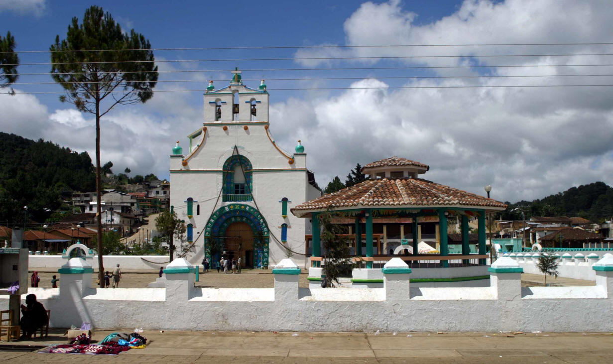
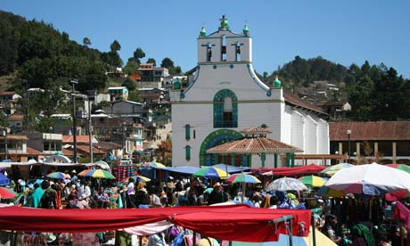
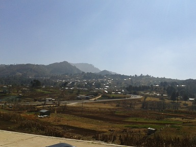
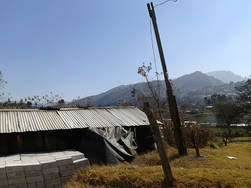
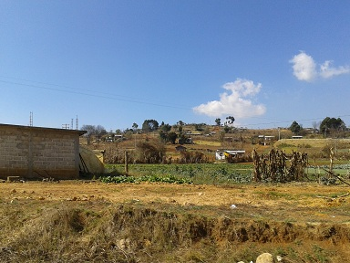
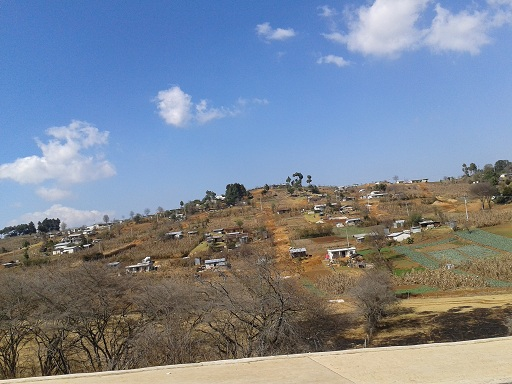

En la época prehispánica, Chamula era un importante centro d población tzotzil, su nombre proviene de Chamollan que en náhuatl significa “donde abundan Guacamayas”, aunque algunos todavía consideran que significa “Agua espesa, como de adobe”. Este pueblo maravilloso tiene festividades relevantes, tiene atractivos turísticos como el convento de san juan bautista. Sus museos y su agradable clima que te hará pasar un fin de semana maravilloso.
Al norte con los municipios de Ixtapa, Larraínzar, Aldama, Chenalhó, Mitontic; al este con los municipios de Mitontic, Tenejapa, y San Cristóbal de las casas; al sur con los municipios de San Cristóbal e las casas y Zinacantán; al oeste con los municipios de Zinacantán e Ixtapa.
Partiendo de San Cristóbal de las Casas:
Diríjase hacia el este en Las Gladiolas hacia Las Gardenias – siga hacia Las Gardenias – hasta girar en la tercera en Alcatraces – gire a la izquierda con dirección a Av. Chenalhó/Puebla – siga en esa dirección – hasta girar a la derecha con dirección a Av. Ramón Larraínzar – continúe por Chamula – diríjase hacia la derecha- manténgase hacia la derecha hasta llegar a la entrada de Chamula- seguido doble a mano derecha para entrar al pueblo.
Dentro de este magnifico municipio puedes realizar actividades vinculadas al patrimonio histórico-cultural como; admirar o comprar las artesanías de este hermoso pueblo y visitar su magnífico museo.






posicione el mouse sobre las imágenes